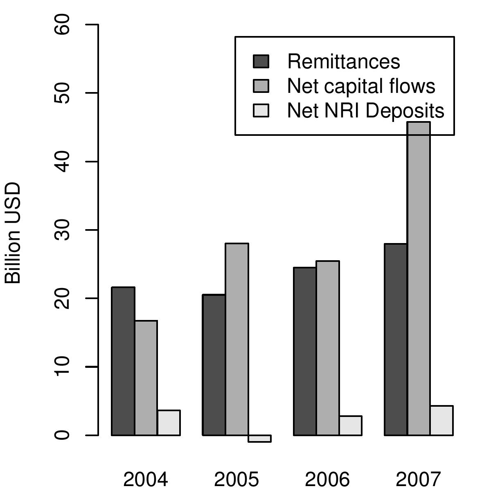
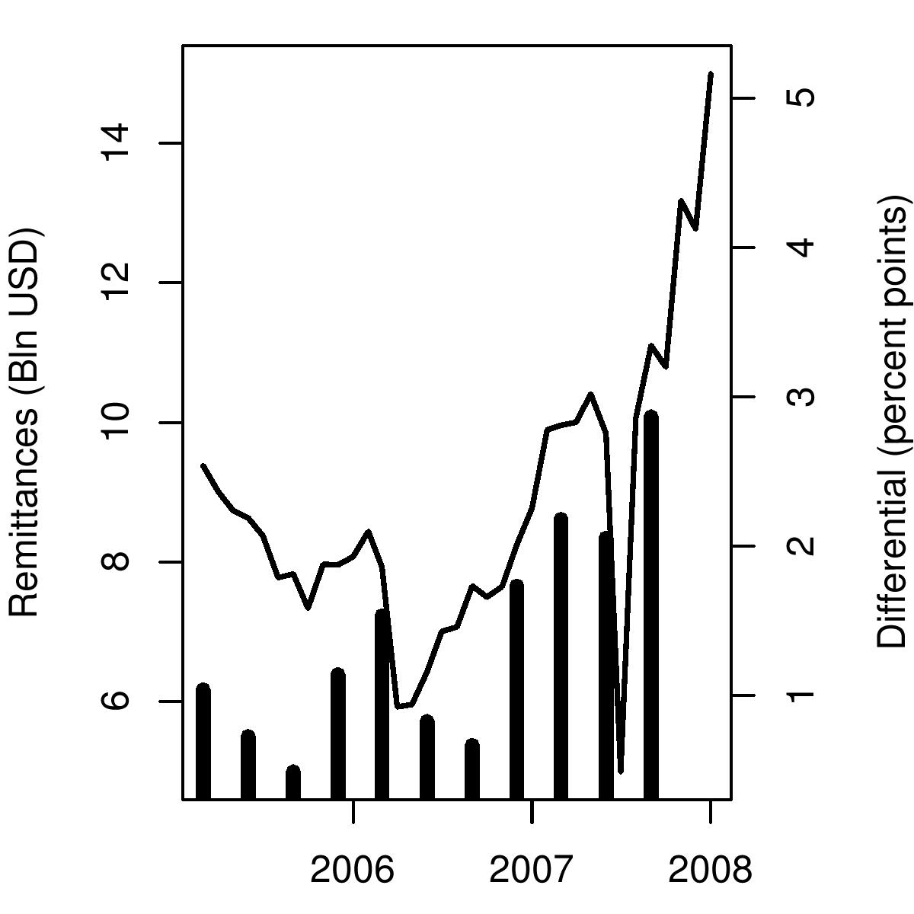

Home is where the dollar goes
Indian Express, 14 February 2008
Indians living abroad send dollars into India in two ways. One, through NRI deposits, and second, and more importantly, through private transfers. Private transfers, also called remittances, which show up on the current account of the balance of payments, have witnessed a sudden increase in recent months. Private transfers coming into India between July to September 2007 were USD 10.1 billion. Inflows on account of net private transfers were next in magnitude to net inflows due to the portfolio investments by FIIs which were only slightly higher than private transfers at USD 10.9 billion. Private transfers generally consist of money sent by Indian workers to their families in India.
Even in the past, the contribution of the Indian diaspora to dollars flowing into India has been very large. While NRI deposits have been much smaller, net private transfers have been huge. As FIG 1 shows what Indians abroad send to their families back home is very large compared to the net capital flows that foreigners bring in, which are the focus of Indian debates on convertibility and monetary policy. In 2006, for example, dollar inflow into India on account of private remittances was USD 24 billion. Net capital flows on account of FII, FDI, debt and other flows added up to only a slightly higher number of USD 25 billion.
Last year, in 2006-07, the Indian diaspora sent in remittances worth USD 28 billion dollars. This financial year, between April and September 2007, they had already sent in USD 25 billion into India. In a survey of NRI remittances, the RBI is reported to have found that nearly half the money sent from abroad is spent by families while the rest is either parked in bank deposits or used to purchases shares and property. The biggest flow of remittance into India, which is the largest receipient of remittances in the world today, now comes from the United States. The latest available data shows that about 44 percent of remittances comes from North America and another 32 percent from the Middle East.
What has prompted the sudden sharp increase in remittances in the recent period?
Figure 2 suggests that periods when the interest rate in India is higher than the interest rate in the US, i.e. when the interest differential is high, are the times when remittances go up. This hypothesis is not inconsistent with the view that nearly half the inflows are invested to earn returns in the domestic market.
In BOP data, remittances are counted as a current account entry. However, they constitute one important element of India's capital account openness. With the massive interest rate differential that has opened up, one brother can borrow $100,000 in the US, and send this money to a brother in India, who would earn a premium of 6 percentage points. This gives an easy profit of Rs.240,000 over a year. Millions of households could do this. While it is easily understood that capital flows such as debt flows and external commercial borrowing would move sharply with changes in interest differntials, this story has not been so obvious for private transfers in earlier years. However, increasingly as private transfers are coming from the US and from higher income families and are meant not just for family maintenance, but also for finanacial investment by families, the nature of these transfers appears to be chaning. Since the amount of transfers is a very large amount compared to the dollars that flow into India through different categories of the capital account, they offers an opportunity for money to be moved in and out of the country.
Back up to Ila Patnaik's media page
Back up to Ila Patnaik's home page